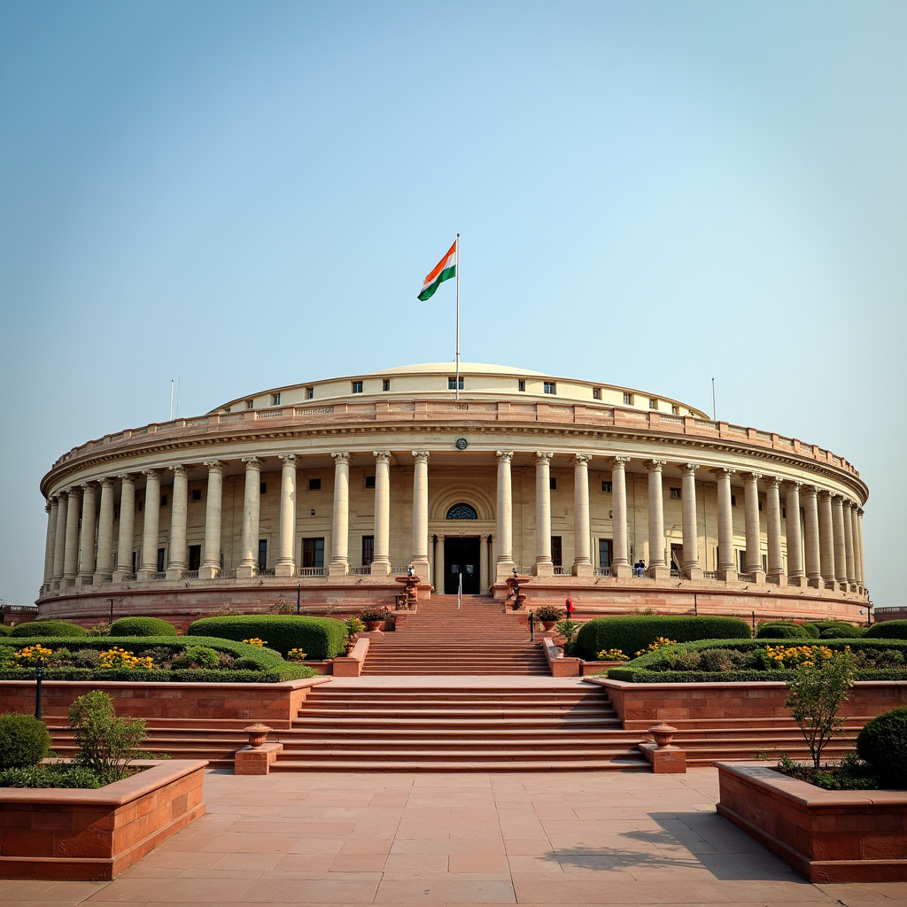

The history of India has been dominated by kings and their largesse. The top down approach to ruling over the subjects and the benevolence of kings is well known. So when 100 thousand British people had to rule over 400 million Indians they used this benevolence. The land owning elite were co-opted into their administration and the zamindars ruled on their behalf. These elites continued to exist till the ryotwari system took shape and the Zamindari system was slowly abolished. Culturally we were a land of many kingdoms. With different languages, identities and practices. Years of invasion had wrought cultural variety upon us. Parliamentary democracy and ideas of liberty are relatively new.
We made progress since independence. Some of the post independence accomplishments included, abolition of zamindari system, this empowered many individual land owners and reduced the influence of the land owning elite. Integration of princely states was done very efficiently to be able to carve out the nation. Handling linguistic diversity by forming states and evolving a federal nature to the union, maintained harmony and identity. During a period when agriculture was the predominant profession the green revolution formed the basis of our economy. With all these we were making progress as a young democracy.
The quest for industrialisation of the young nation made the state step in to play a major role in incubating the industries. The nature of politics started changing during this period. Unbridled adventures by the state in setting up industries beyond the core sector, instead of encouraging private enterprise, put us decades behind many developing economies. Socialism that could have been used to kick start the core industries, make health and education a priority for social services, was completely absent. Decades of these misadventures piled up into an institutional crisis we face today.
The axes of the institutional crisis we face today are manifold. It followed a path of slow decay led by bad decisions and no consequences. Some of the issues are:
- Exercise of power — The systems over the decades got used to running government monopolies and instituted the license permit raj. This allowed the politicians to continue the culturally familiar king-subject-zamindar system in a proxy mode. This asymmetry of power, that was carefully cultivated over the decades, has completely relegated democracy to a ballot box exercise. The power is abused to bypass due process and perform favours in return for money.
- Rigid uniformity — Institutional rigidity was strengthened by the license quota permit raj. It centralised power and the constitutionally setup federated structure was weakened. Even today most of the state list functions are incentivised and directed by the center under the guise of monetary support. The ToR of finance commission still uses the grant carrot to force states to tow the central line. The incapability of local governance to rein in revenue deficit, is stated as an excuse to enforce uniformity top down. Due to this rigidity, the role of the state today is diffused, its efficacy under question, its size disproportionate to the general economy and accountability completely missing.
- Vicious cycles — Politics which is supposed to be a solution has become problem. There is a well developed market for public office with money and influence flowing in all directions. Vote has been delinked from public good, taxes have been delinked from services. This has led to bad outcomes across the board. With the cost of elections going up there is a steep entry barrier for new parties and people to get on board. From within the existing parties, the election funding expenses is keeping the "favour for money" cycle spinning without an exit route. Short term gains has taken precedence over the long term public good. Pandering to caste, religion, class etc has kept this cycle going.
The foreign exchange reserve crisis of 1991 brought along some hope to break the economic shackles. While it has brought about a bump in the growth, it is but a minor bump. 69% of organised sector, is still the public sector. The private sector is largely still weak. The cycle of corruption and favours is still not broken. The vested interests in the society which benefit from lax regulation abuse this and weaken the institutions further. This has completely brought growth many notches down from what it can possibly be. The institutions are so ravaged that small pockets of goodness is but a drop in the ocean. There is increasing levels of awareness of wanting to break the shackles but its proving to be arrows on a wall bouncing off without effect. Unless the institutions are strengthened and federalism takes root in a fundamentally different way, its going to be an uphill task to change the trajectory.